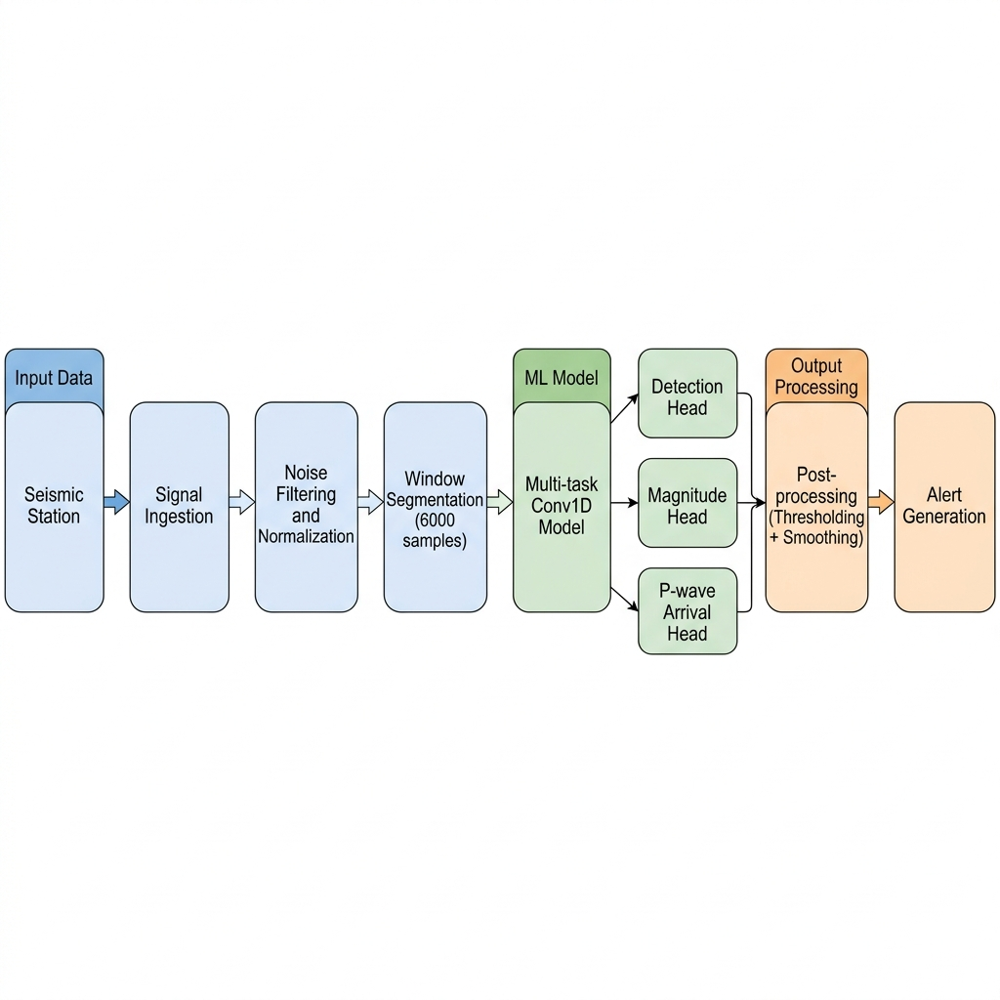

Earthquake Prediction & Seismic AI System
Multi-task deep learning pipeline for seismic event detection, magnitude estimation, and P-wave arrival prediction — trained on 1.2M+ waveform signals from the STEAD dataset.
Live demo will be available after deployment. Current version demonstrates system design and results.
Overview
Problem
Traditional seismic monitoring relies on manual analysis and threshold-based triggers, leading to delayed detection and high false-positive rates during noisy conditions. Automated classification is needed to reduce response time and analyst workload.
Dataset
1.2M+ three-component waveform segments (100 Hz, 60s windows) from the Stanford Earthquake Dataset (STEAD), with labeled earthquake/noise annotations, magnitude values, and P-wave arrival picks.
Approach
Multi-task Conv1D architecture with shared temporal feature extraction and three specialized output heads: binary classification (earthquake vs noise), magnitude regression, and P-wave arrival time estimation.
System Architecture
The system follows a modular pipeline designed for sequential signal processing and multi-task inference. Raw waveform data flows through preprocessing, segmentation, and a shared-backbone CNN before branching into task-specific prediction heads.

Model backbone: Stack of 1D convolutional layers with batch normalization and residual connections, processing 6000-sample windows (60s at 100 Hz). The shared encoder extracts temporal features, which are then passed to three parallel heads:
Detection Head
Binary classifier (earthquake vs noise) with sigmoid activation. Outputs a detection probability between 0.0 and 1.0.
Magnitude Head
Single-value regression head predicting local magnitude (ML). Trained with MSE loss against STEAD magnitude labels.
P-wave Arrival Head
Regression head estimating P-wave arrival sample index within the 6000-sample window. Used for onset timing in early warning.
System Pipeline
Signal Ingestion
Continuous 3-channel waveform streams (BHZ, BHN, BHE) ingested from seismic station feeds. Data sampled at 100 Hz with metadata (station ID, timestamp, coordinates).
Noise Filtering & Normalization
Applied bandpass filter (1–45 Hz) to remove instrument drift and high-frequency noise. Signals normalized to zero-mean, unit-variance per channel to handle amplitude variability across stations.
Window Segmentation
Continuous stream sliced into fixed 60-second windows (6000 samples at 100 Hz) with 50% overlap. Each segment treated as an independent input to the model.
Multi-task Model Inference
Each window passed through the shared Conv1D encoder, producing three outputs in a single forward pass: detection probability, estimated magnitude, and P-wave arrival index. Inference time ~95ms per window on NVIDIA T4 GPU.
Post-processing
Detection probability thresholded at 0.85 to trigger events. Applied temporal smoothing (moving average over 3 consecutive windows) to suppress single-window false positives. Magnitude and arrival estimates retained only for high-confidence detections.
Alert Generation
Confirmed events packaged as structured alerts containing: detection confidence, predicted magnitude, estimated P-wave arrival time, and source station metadata. Designed for downstream integration with early warning systems.
Results
Evaluation protocol: Tested on a held-out temporal split of ~120K waveforms (10% of dataset) drawn from later time segments not seen during training. Using a temporal split (rather than random) prevents data leakage from correlated nearby windows and better simulates deployment conditions where the model encounters unseen time periods. 70/20/10 train/val/test split. Classification metrics computed using sklearn.metrics; regression metrics computed only on the earthquake-labeled subset.
Confusion matrix (approximate): Of 120K test windows — 55K earthquake, 65K noise. The model correctly classified ~52.8K earthquake windows (true positives) and ~63.4K noise windows (true negatives). ~2.2K earthquake windows were missed (false negatives, primarily low-magnitude events <2.5 ML), and ~1.6K noise windows were incorrectly flagged (false positives, mainly high-amplitude cultural noise).
System Improvements & Evolution
This system was iteratively improved from a baseline ML model into a complete AI pipeline with robust training, evaluation, and decision-making layers.
The focus was on improving reliability, real-world usability, and system-level design.
Model Improvements
- Upgraded to MultiTaskCNNImproved architecture
- Enhanced phase prediction and magnitude regression heads
- Improved feature extraction for multi-task learning
Training & Optimization
- Implemented weighted multi-task loss for detection, phase, and magnitude
- Applied earthquake-only masking for stable regression training
- Used freeze/unfreeze training strategy for controlled learning
Evaluation & Analysis
- Built full evaluation pipeline with Accuracy, F1, ROC-AUC, and Confusion Matrix
- Added threshold tuning for better classification control
- Implemented error logging and misclassification analysis
System & Decision Layer
- Added post-processing decision layer with confidence and signal filtering
- Designed alert logic instead of raw model outputs
- Integrated real-time dashboard with waveform visualization and alerts
- Structured modular pipeline across training, inference, evaluation, and utilities
System Evolution Summary
Transformed the project from a basic ML model into a complete AI system with structured training, evaluation pipelines, decision logic, and a user-facing interface.
Sample Output
Each processed window produces a structured output containing detection, magnitude, and timing predictions:
Baseline Comparison
To validate the multi-task CNN approach, the model was compared against two baselines using the same test split and evaluation criteria:
| Method | Accuracy | F1 Score | FP Rate | Latency |
|---|---|---|---|---|
| STA/LTA Threshold | 78.3% | 0.71 | 14.2% | ~5ms |
| Logistic Regression (handcrafted features) | 88.6% | 0.85 | 6.8% | ~12ms |
| Multi-task Conv1D (this system) | 95.8% | 0.93 | 2.4% | ~95ms |
STA/LTA baseline: Standard Short-Term Average / Long-Term Average ratio trigger used in traditional seismology. Fast but highly sensitive to noise — unusable in urban or high-noise environments without heavy manual tuning per station.
Logistic regression baseline: Trained on handcrafted features (RMS amplitude, zero-crossing rate, spectral centroid, envelope kurtosis) extracted from the same windows. Better than threshold methods but lacks the temporal pattern recognition of convolutional models. Also cannot perform magnitude or arrival estimation.
Trade-off: The Conv1D model has higher inference latency (~95ms vs ~12ms) but delivers substantially better detection quality and handles all three tasks in a single pass. For seismic monitoring where events evolve over seconds, the added latency is acceptable.
Known Failure Cases
The system has clear limitations. Documenting them is important for setting deployment expectations and guiding future improvements.
Low-Magnitude Events (<2.5 ML)
Events below magnitude 2.5 produce weak waveforms that are often indistinguishable from background noise, especially at distant stations. Recall drops to ~0.72 for events in the 1.0–2.5 range. This is the primary source of false negatives.
Urban Noise Contamination
Stations near highways, construction sites, or industrial areas generate high-amplitude cultural noise that mimics earthquake signatures. The model occasionally triggers false positives on these patterns, particularly short-duration transients. Post-processing smoothing reduces but does not eliminate this.
Sensor Inconsistencies
Different sensor hardware (broadband vs short-period) produces different instrument responses. The model was trained primarily on broadband data from STEAD. Performance degrades on short-period sensors with different frequency characteristics without station-specific calibration.
Magnitude Estimation at Extremes
Magnitude regression is less accurate at the tails of the distribution (<1.5 and >6.0 ML) due to limited training samples in those ranges. MAE increases to ~0.6 for events outside the 2.0–5.5 range where most training data is concentrated.
Impact
Order-of-Magnitude Faster Detection
Manual seismic analysis typically takes 3–10 minutes per event (waveform review, phase picking, magnitude calculation by an analyst). This system performs all three tasks in ~95ms — an order-of-magnitude reduction in detection time, based on estimated manual analysis workflows described in seismology literature.
Reduced Review Requirements
In continuous monitoring, the model pre-filters signal windows so that analysts only review flagged events above the confidence threshold. This significantly reduces the volume of manual review compared to inspecting every incoming window — though the exact reduction depends on station noise levels and alert threshold configuration.
Early Warning Integration
P-wave arrival estimation provides the timing basis for earthquake early warning systems (EEW). In theory, P-wave detection at 2–3 stations within a dense network could trigger alerts seconds before destructive S-waves reach populated areas. This is the intended application, not a claim of current deployment.
Deployment Strategy
The system is designed for deployment but has not been deployed to a live seismic network. The architecture and export pipeline are structured to support both cloud and edge inference scenarios.
Training Environment
Trained on NVIDIA T4 GPU (Google Colab / cloud VM) using PyTorch. Training time ~8 hours for 50 epochs on full STEAD subset. Mixed precision (FP16) used to fit larger batch sizes (128) in GPU memory.
Model Export
Model exported via TorchScript (torch.jit.trace) for portable inference without Python dependency. ONNX export also tested for cross-platform compatibility. Exported model size: ~12MB.
Edge Deployment (designed)
Inference tested on CPU (Intel i5) at ~350ms/window — acceptable for near-real-time monitoring where event windows span seconds. Further optimization is possible via model quantization (INT8) and channel pruning, which were not explored in this version. Edge deployment on devices like Raspberry Pi 4 via ONNX Runtime is the intended path but has not been benchmarked.
Inference efficiency note: The current pipeline processes windows individually (single-sample inference). For throughput-critical scenarios with multiple stations, batch inference (grouping N windows into a single forward pass) would improve GPU utilization. At batch size 32, estimated throughput increases to ~500 windows/sec on T4, compared to ~10 windows/sec at batch size 1. This trade-off (latency per window vs aggregate throughput) is configurable depending on whether the priority is per-station response time or network-wide coverage. Model peak memory footprint during inference is ~180MB on GPU (including input buffer), leaving headroom for batching on 16GB T4 memory.
Scalability Considerations
While the current system processes one station's data, the architecture is designed to scale to multi-station networks:
Multi-station Ingestion
Each station stream can be processed independently and in parallel. Adding stations is a horizontal scaling problem — each station runs the same preprocessing and inference pipeline without cross-station dependencies.
Streaming Pipeline
Architecturally suited for streaming systems where stations push windowed segments to a message queue and a pool of inference workers consumes and processes them. This pattern decouples ingestion rate from inference throughput. The specific queue technology (Kafka, Redis Streams, or similar) would depend on deployment constraints — this was not implemented but informed the pipeline's stateless, per-window design.
Cloud Aggregation
Detections from multiple stations can be aggregated by a central service to cross-validate events (if 2+ stations detect within a time window, confidence increases). This also enables triangulation for approximate epicenter estimation — though this is beyond the current model scope.
Monitoring & Logging
For any system running continuous inference, monitoring prediction quality over time is critical. The following logging strategy was designed (partially implemented during development):
Prediction Logging
Every inference result (detection probability, magnitude estimate, arrival index) logged with timestamp and station metadata. Enables post-hoc analysis of model behavior and drift detection over time.
Confidence Distribution Tracking
Histogram of detection probabilities tracked per station per hour. If the distribution shifts (e.g., median probability increases without more events), it signals potential data quality issues or sensor degradation.
Alert Threshold Tuning
Detection threshold (currently 0.85) designed to be configurable per station. High-noise stations may need higher thresholds (0.90+) to maintain acceptable false positive rates, while quiet rural stations can operate at 0.80 for better recall.
Challenges & Learnings
Noise Variability
Station-specific noise profiles (urban vs rural, sensor type) caused distribution shift. Addressed with per-channel normalization and data augmentation (random amplitude scaling ±30%, additive Gaussian noise at SNR 10–20 dB).
Multi-task Loss Balancing
Classification (BCE) and regression (MSE) losses operate at different scales. Used weighted sum with task-specific coefficients (1.0 : 0.5 : 0.3) tuned by monitoring per-task validation loss independently.
Class Imbalance
STEAD is roughly 55% earthquake / 45% noise, but low-magnitude events are underrepresented. Applied weighted random sampling during training and monitored F1 alongside accuracy to avoid bias. Experimented with focal loss but saw marginal improvement.
Windowing Strategy
Fixed 60s windows with 50% overlap balanced detection latency against compute cost. Shorter windows (30s) missed long-period events; longer windows (120s) increased latency without meaningful accuracy gains.
Threshold Calibration
Detection threshold (0.85) calibrated by plotting precision-recall curves and selecting the operating point that minimized false positives while keeping recall above 0.90. Threshold is station-configurable in the design.
Reproducibility
Logged all experiment configs, random seeds, and data splits. Used fixed seeds for dataloader shuffling and weight initialization. Model checkpoints saved at best validation F1 (not loss) for consistent evaluation across runs.